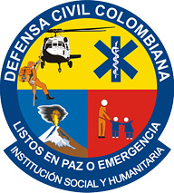

<!DOCTYPE.html>
<html>
<meta charset="UTF-8">
<head>
  <title> Quienes Somos </title>
        <!--Import Google Icon Font-->
      <link href="http://fonts.googleapis.com/icon?family=Material+Icons" rel="stylesheet">
      <!--Import materialize.css-->
      <link type="text/css" rel="stylesheet" href="css/materialize.min.css"  media="screen,projection"/>

      <!--Let browser know website is optimized for mobile-->
      <meta name="viewport" content="width=device-width, initial-scale=1.0"/>
    
        <body>
      <!--Import jQuery before materialize.js-->
      <script type="text/javascript" src="https://code.jquery.com/jquery-2.1.1.min.js"></script>
      <script type="text/javascript" src="js/materialize.min.js"></script>
    </body>

    <div class="container">
        <!-- Page Content goes here -->
      
  </html>
</head>
<body>
<header>
   
  
</header>
<nav>
    <ul>
      <li><a href="index.html">Inicio</a></li>
      <li><a href="introduccion.html">Quienes somos</a></li>
      <li><a href="Registro.html">Vinculese a nuestra Institución</a></li>
      <li><a href="Contacto.html">Contactenos</a></li>
      <li><a href="servicios.html">Servicios</a></li>
    </ul>
</nav>
<hgroup>
<div align="center"><h3>Defensa Civil Colombiana</h3>
</div>
</hgroup>

<p>

</p>

<h2>Misión</h2>
<p align="justify"> "La Defensa Civil Colombiana, prepara y ejecuta la respuesta a las emergencias y desastres naturales o antrópicos; participa en la rehabilitación social y ambiental en todo el territorio nacional para contribuir a la paz, los derechos humanos y los compromisos multilaterales en caso de requerimiento internacional."
</p>

</br></br></br>

<p>

</p>

<h2>Visión</h2>
<p align="justify">La Defensa Civil Colombiana en el 2.018 será una institución moderna, especializada en preparación y respuesta a las emergencias y desastres, con reconocimiento en cooperación internacional y gestora de proyectos sociales y ambientales que contribuyan al desarrollo sostenible del país.
</p>

